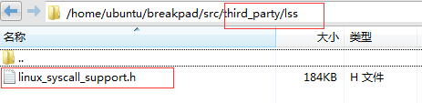
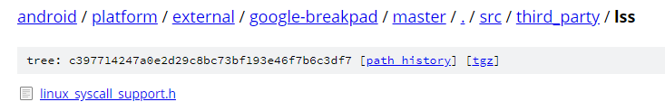
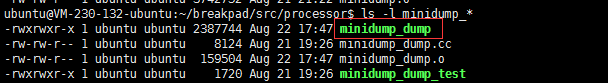
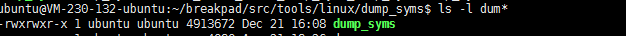

title: "Breakpad如何解析Native崩溃dump文件"
catalog: true
subtitle: "Breakpad如何解析Native崩溃dump文件"
header-img: "Demo.png"
tags:
- nativecrash
catagories: - nativecrash
Breakpad如何解析Native崩溃dump文件
breakpad是google针对native层crash的一套通用的框架如何使用请看下文
如果想省去找报错文件调试等直接下载我上传的代码即可：
代码地址
1 | git clone https://chromium.googlesource.com/breakpad/breakpad |
编译整个breakpad项目(不是针对Android的)
编译项目的目的是生成minidump_stackwalk dump_syms等等
由于编译会用到g++库，所以运行g++ --version如果没有安装g++，则使用sudo apt-get install g++
然后进入到breakpad工程的根目录进行编译
1 | ./configure && make |
运行这个命令完成之后，工具将产生在如下路径：
src/processor/minidump_stackwalk, src/tools/linux/dump_syms/dump_syms
这个时候可能会报错，意思缺少这个头文件

这个头文件的来源，网上参差不齐。但是最终决定还是在aosp最新代码中查找

title: "Breakpad如何解析Native崩溃dump文件"
catalog: true
subtitle: "Breakpad如何解析Native崩溃dump文件"
header-img: "Demo.png"
tags:
- nativecrash
catagories: - nativecrash
按照目录将其复制到代码中，然后继续执行./configure && make最后代码执行成功后，会在如下两个目录生成工具：
src/processor/minidump_stackwalk, src/tools/linux/dump_syms/dump_syms


要使用这两个工具，两种方式
- 配置环境变量(cd ./~)
在.bash_profile文件中加入以下代码（如果你当前用的是zsh，则在.zshrc文件中）：
1 | export BREAKPAD_HOME=/xxx/breakpad/src |
然后使其生效
1 | source ~/.bash_profile(如果你用的是zsh,则是source ~/.zshrc) |
这个时候工具我们有了，我们需要分析崩溃日志，所以需要有几个必要条件：
- crashfile.dump文件(崩溃文件)
- 带有符号表的so文件
- 生成的工具
-
获取so的符号表(生成test.so.sym符号表)
1
./dump_sym test.so > test.so.sym
-
得到堆栈文件
1
./dump_stackwalk crash.dmp test.so.sym>crash.log
-
根据地址定位哪一行出错
1
./arm-linux-androideabi-addr2line -C -f -e libtest.so 0x1111(这个地址看log文件栈顶)